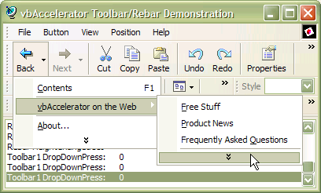
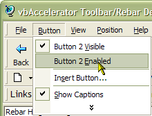
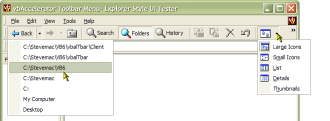
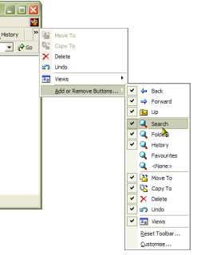

CoolMenu Toolbar Control Documentation (5K)
CoolMenu Toolbar Control Documentation (5K)
 VB5 Toolbar Complete Source (263K)
VB5 Toolbar Complete Source (263K)
 VB5 Toolbar Control Binary (78K)
VB5 Toolbar Control Binary (78K)
 VB5 Toolbar Demonstration (97K)
VB5 Toolbar Demonstration (97K)
 VB6 Toolbar Complete Source (261K)
VB6 Toolbar Complete Source (261K)
 VB6 Toolbar Control Binary (80K)
VB6 Toolbar Control Binary (80K)
 VB6 Toolbar Demonstration (93K)
VB6 Toolbar Demonstration (93K)
 Bugs: 2 / 2
Bugs: 2 / 2
 Issues: 1 / 1
Issues: 1 / 1
 Questions: 0 / 0
Questions: 0 / 0
 11 May 2003
11 May 2003
Bug fix release to fix accelerator and chevron problems.
Coolmenu accelerators caused problems - sometimes the menus triggered without the Alt- key being pressed, othertimes they did not trigger when they should. The logic has been rewritten to correct this.
Chevrons created by the toolbar did not trigger when clicked with the mouse. Fixed. The chevron now also uses a Menu window class as a base so it draws in the same way as menus on the system.
Some non-English keys did not work as accelerators. Fixed with code provided by Sergey Pitutin.
The Toolbar, Rebar and ToolbarHost controls could not be hosted on a UserControl. They now can. Thanks to Alexander Stetsenko for the information.
The MDI buttons in the toolbar host control now render using XP Visual Style if appropriate. Thanks to Nguyen Tuan Anh for the suggestion.
SaveLayout and RestoreLayout (beta) methods have been added to the Rebar based on a method suggested by Ralph Brugger at LinkPool. Feedback please!
 PopupMenu DLL - Create Unlimited Popup Menus
PopupMenu DLL - Create Unlimited Popup Menus
 Subclassing Without The Crashes
Subclassing Without The Crashes

vbAccelerator Toolbar and CoolMenu Control v3.5
The Control that VB doesn't give you - complete menu, toolbar and rebar flexibility
This control allows you to create modern UIs like Internet Explorer or Word with full colour-depth toolbars, CoolMenus, resizable and movable toolbar bands, controls in the toolbar and much more. It works with standard forms and MDI forms and also allows you to create Outlook-style MDI applications by hiding the MDI-child window control buttons.
In The Beginning...
In VB5, there is a toolbar control for VB included in COMCTL32.OCX. In VB6, the same thing with some UI improvements is available in MSCOMCTL.OCX. You can also obtain a Microsoft rebar control for VB5; it is included with VB6. These controls all have quite a nice design time interface, and they're relatively easy to use. But...
...But...
If you have seen Office, VB, Visual Studio, IE (in fact, almost any application released by Microsoft...) you will have noticed that the VB controls just don't cut it:
- Why does my menu sit on top of the toolbar?
- Why aren't there any icons in the menus?
- Why are there no drop-down buttons in VB5?
- Why is it impossible to show a chevron for a toolbar band that is too small?
- Why can't I have the new Office XP style for my buttons?
The vbAccelerator CoolMenu, Toolbar and Rebar control aims to give you this control. Your project will look cooler, it'll weigh in at least 420kb less on disk and you'll be loved by colleagues and users alike (possibly).
Features
The Toolbar
Any toolbar can act as a menu if used with the ActiveX Popup Menu DLL. Built in Accelerator support means you get full support for Alt- key accelerators in every button too (regardless of whether the button is a menu button or not).
CoolMenu support is enabled for both standard forms and MDI forms. In the MDI version, you must add the toolbar to the cToolBarHost control included with the package, and set the cToolbarHost's MDIMenu property.
DropDown Buttons
Both styles of drop-down buttons can be displayed - so you can click the button separately from the drop down. If you build the toolbar from a PopupMenu object then the submenus for drop-down buttons are automatically displayed.
List Style Buttons
In the DropDown buttons image above, you can see that buttons can have text to the right of the button. In addition, buttons in all types of toolbar can have the autosize style so their width is calculated for correctly for the image and text on the button. No more buttons that are three miles long just to display the text "Open"...
Access to Built-In Explorer Icons
The standard explorer icons are all available from the toolbar control itself without having to load an ImageList. Note that these are not available for toolbars with the Office XP style.
Any Size Icon, Any Colour Depth
Any problems with the VB/COM StdPicture object are banished in this control - provide it whatever image you want and the toolbar will display it. The toolbar provides an in-built method for determining the system colour depth and you can load all the button images at the same time from a single resource bitmap, file bitmap or VB picture object.
Alternatively, you can use image lists, and now there is a vbAccelerator Image List control and class so you don't need to worry about distributing an enormous OCX just to do it!
The demonstration downloads come with a set of Explorer and Internet Explorer 256 colour bitmaps, in both hot and standard colours. You can get more sets of icons from the Graphics Library.
Control Button Appearance at Runtime
In List Style toolbars you can toggle text on/off for individual buttons. In a normal style toolbar, toggling text visibility for any button automatically flips the text visibility of all the other buttons in the bar. You can also flip between List (text next to the button) and Standard (text below the button) at any time.
Independent Normal and Hot Images
Just as the Internet Explorer toolbar, when you use Image Lists as the source of toolbar images, you can set one set of images to display when the mouse is not over the button and another when it is.
Smooth Display
Comctl32.OCX implements its toolbar by continually removing and re-adding buttons whenever you change the properties. Wherever possible, this toolbar modifies the buttons using the in-built methods of Comctl32.Dll, which makes the display much smoother. The only property that causes a button to be deleted and re-added is the ButtonCaption property, and this minimises flicker by only removing the affected button.
Office XP Style Buttons
Version 3.5 adds Custom Draw support to draw the buttons using Office XP style. Use the DrawStyle property to configure this. Note that currently the shadows for drop-down buttons are missing. This will be added in a subsequent release.
The Rebar
Chevron Support
Provided the target system has COMCTL32.DLL version 5 or higher, you can toggle Chevrons on or off. Chevrons display when a band is too small to show the entire contents. When the toolbar has been created from a menu, Chevrons are added completely automatically - and you can set whether the bar shows a customise toolbar menu.
Set Band Visibility
Show and hide any rebar band with a single call.
Background Bitmap
Just as you can with the toolbar control, the rebar can have any background image loaded from a resource bitmap, a file bitmap or a VB picture object.
Add any control to the Rebar
Provided a control has a hWnd property, you can add it as a rebar band. If it doesn't have a hWnd, just place it in a PictureBox and add the PictureBox to the rebar.
Run-time Control over Band sizes
You have complete control over the minimum, maximum and ideal size of any rebar band, and you can specify whether bands are fixed or moveable in the rebar.
Getting the Best From the Control
To get the best from the control, the target system will ideally have version 4.71 or higher of Comctl32.Dll installed. Some of the features are not supported in version 4.70, and also Comctl32.Dll itself performs much more smoothly in subsequent versions. You can find what version of Comctl32.Dll the target system is running using the toolbar's GetCommCtrlVersion method (see the demonstration code for details). The control degrades (fairly) gracefully with earlier versions.
Quick Start Tutorials
To get you up and running quickly with this control there are two Quick Start tutorials:
- Quick Start 1 - Add a Rebar and a Toolbar to Your App
- Quick Start 2 - Add a CoolMenu Support Your App
Documentation
Documentation for the CoolMenu Toolbar and Rebar control is available in RTF format. This documentation was created with the Active X Documenter, which is also available for download.